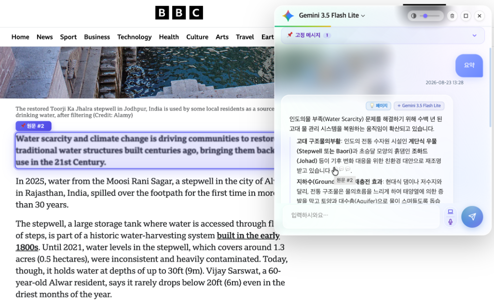
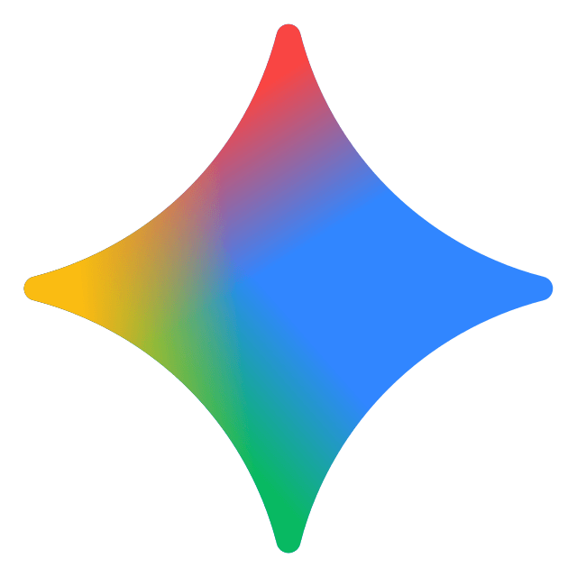

보고 있는 웹페이지, PDF, 이미지, YouTube 동영상 자막까지!
간편한 단축키 Alt + J 로 실시간 요약 · 분석 · 시각화 · 음성 대화를 경험해 보세요.

생산성을 극대화하는 8가지 혁신적인 AI 파워 기능
Google Gemini, Anthropic Claude, Cerebras Llama 등 다양한 AI 모델을 Direct Streaming으로 지원하며, 팝업에서 원하는 모델을 자유롭게 등록·관리합니다.
유튜브 접속 시 자막(Transcript)을 자동 추출하여 동영상 핵심을 3초 만에 요약하고, 웹페이지 노이즈를 정제하여 핵심 본문을 수집합니다.
AI 복잡한 답변을 순서도(Flowchart), 시퀀스 다이어그램으로 자동 시각화합니다. 대형 줌/팬 모달 및 고해상도 PNG 복사/저장 기능 제공.
Alt+V 단축키 한 번으로 키보드 없이 마이크로 말하고, AI 답변을 고품질 한국어/영어 음성으로 자연스럽게 청취하세요.
중요 답변 코드나 요약 카드를 상단에 고정해 둔 채 작업이 가능하며, 마우스 드래그로 위젯 높이와 넓이를 자유롭게 조절합니다.
텍스트 복사 금지, 드래그 방지, 우클릭 제한이 적용된 블로그나 웹사이트의 제약을 클릭 한 번으로 손쉽게 해제합니다.
웹페이지 내 불필요한 배너 광고 및 스폰서 요소를 자동 필터링하여 눈의 피로를 줄이고 쾌적한 가독성을 제공합니다.
AI가 요약 및 답변을 생성할 때 참조한 웹페이지 원문 텍스트 위치를 시각적으로 강조 표시하여 정보 신뢰도를 극대화합니다.
웹 브라우저에서 WithAvis가 작동하는 방식을 직접 클릭해 보세요

번거로운 반복 작업 없이, 웹서핑과 정보 습득 속도를 극대화합니다
WithAvis는 사용자의 프라이버시를 최우선으로 생각합니다.
입력하신 API 인증 키와 대화 내역은 외부 서버가 아닌 사용자의 브라우저 로컬 암호화 저장소(chrome.storage.local)에만 보관됩니다.